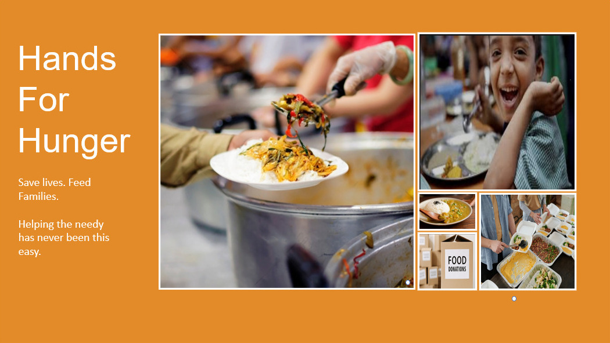

{% load static %}
<!DOCTYPE html>
<html lang="en">

<head>
    <meta charset="UTF-8" />
    <meta http-equiv="X-UA-Compatible" content="IE=edge" />
    <meta name="viewport" content="width=device-width, initial-scale=1.0" />
    <title>HandsForHunger</title>
</head>

<body>
    <nav class="navbar navbar-expand-lg navbar-dark bg-dark">
        <div class="container-lg">
            <a href="{% url 'home' %}" class="navbar-brand">Home</a>
            <button class="navbar-toggler" type="button" data-bs-toggle="offcanvas" data-bs-target="#offcanvasNavbar"
                aria-controls="offcanvasNavbar">
                <span class="navbar-toggler-icon"></span>
            </button>
            <div class="offcanvas offcanvas-end bg-dark" tabindex="-1" id="offcanvasNavbar"
                aria-labelledby="offcanvasNavbarLabel">
                <div class="offcanvas-body">
                    <ul class="navbar-nav justify-content-end flex-grow-1 pe-3">
                    </ul>
                </div>
            </div>
        </div>
    </nav>

    {% if messages %}
    <div class="container text-center mt-2 mb-1">
        {% for message in messages %}
        <div class="alert alert-{{ message.tags }}">
            {{ message }}
        </div>
        {% endfor %}
    </div>
    {% endif %}

    {% block content %} {% endblock %}


    <script src="https://cdn.jsdelivr.net/npm/bootstrap@5.1.3/dist/js/bootstrap.bundle.min.js"
        integrity="sha384-ka7Sk0Gln4gmtz2MlQnikT1wXgYsOg+OMhuP+IlRH9sENBO0LRn5q+8nbTov4+1p"
        crossorigin="anonymous"></script>
</body>


<!-- 
<!DOCTYPE html>
<html>

<head>
  <meta charset="utf-8">
  <title>Hands for Hunger</title>
  <link rel="icon" href="favicon.ico">

  <link href="https://fonts.googleapis.com/css2?family=Montserrat:wght@100;300;400;500;900&family=Ubuntu:wght@300;400;700&display=swap" rel="stylesheet">

  <link rel="stylesheet" href="https://cdn.jsdelivr.net/npm/bootstrap@4.6.2/dist/css/bootstrap.min.css" integrity="sha384-xOolHFLEh07PJGoPkLv1IbcEPTNtaed2xpHsD9ESMhqIYd0nLMwNLD69Npy4HI+N" crossorigin="anonymous">
  <link rel="stylesheet" href="static\images\styles.css">
  
  <script src="https://kit.fontawesome.com/2fd7d971bc.js" crossorigin="anonymous"></script>

  <script src="https://cdn.jsdelivr.net/npm/jquery@3.5.1/dist/jquery.slim.min.js" integrity="sha384-DfXdz2htPH0lsSSs5nCTpuj/zy4C+OGpamoFVy38MVBnE+IbbVYUew+OrCXaRkfj" crossorigin="anonymous"></script>
  <script src="https://cdn.jsdelivr.net/npm/bootstrap@4.6.2/dist/js/bootstrap.bundle.min.js" integrity="sha384-Fy6S3B9q64WdZWQUiU+q4/2Lc9npb8tCaSX9FK7E8HnRr0Jz8D6OP9dO5Vg3Q9ct" crossorigin="anonymous"></script>
  


</head>

<body>

  <section id="title">

    <div class="container-fluid">

      <nav class="navbar navbar-expand-lg navbar-dark">
        
        <button class="navbar-toggler" type="button" data-toggle="collapse" data-target="#navbarSupportedContent" aria-controls="navbarSupportedContent" aria-expanded="false" aria-label="Toggle navigation">
          <span class="navbar-toggler-icon"></span>
        </button>
        <div class="collapse navbar-collapse" id="navbarSupportedContent">
            <ul class="navbar-nav ml-auto">
                <li class="nav-item">
                    <a href="{% url 'home' %}" class="navbar-brand">Home</a>
                </li>
                <li class="nav-item">
                    <a class="nav-link" href="#About">About us</a>
                </li>
                <li class="nav-item">
                    <a class="nav-link" href="#testimonials">Testimonials</a>
                </li>
                <li class="nav-item">
                    <a class="nav-link" href="#cta">Contact</a>
                </li>
                <li class="nav-item">
                    <a class="nav-link" href="#faq">FAQ</a>
                </li>
                <li class="nav-item">
                  <div class="dropdown">
                    <button class="nav-link dropbtn">Sign Up</button>
                    <div class="dropdown-content">
                       <a class="nav-link" href="ngo_register">NGO Sign up</a>
                       <a class="nav-link" href="{% url 'donor_register' %}">Donor Sign up</a>
                    </div>
                  </div> 
                </li>
                <li class="nav-item">
                  <div class="dropdown">
                    <button class="nav-link dropbtn">Login In</button>
                    <div class="dropdown-content">
                      <a href="#">Login In as Donor</a>
                      <a href="#">Login In as NGO</a>
                    </div>
                  </div> 
                </li>
            </ul>
        </div>
      </nav>
    </div>

  </section>

    <div class="content-slider">
        <div class="slider">
          <div class="mask">
            <ul>
              <li class="anim1">
                <div class="quote">“If you cannot feed a hundred people, then feed just one.”</div>
                <div class="source">— Mother Teresa</div>
              </li>
              <li class="anim2">
                <div class="quote">“Poverty is a very complicated issue, but feeding a child isn't.”</div>
                <div class="source">— Jeff Bridges</div>
              </li>
              <li class="anim3">
                <div class="quote">“There are people in the world so hungry, that God cannot appear to them except in the form of bread.”</div>
                <div class="source">— Mahatma Gandhi</div>
              </li>
              <li class="anim4">
                <div class="quote">“Every 10 seconds we lose a child to hunger. This is more than HIV/AIDS, malaria and tuberculosis combined.”</div>
                <div class="source">— Josette Sheeran</div>
              </li>
              <li class="anim5">
                <div class="quote">“Food is the moral right of all who are born into this world.”</div>
                <div class="source">— Norman Borlaug</div>
              </li>
            </ul>
          </div>
        </div>
    </div>

    <section id="title-img">
        <div class="row">
            <div class="col-lg-12">
                
            </div>
        </div>
    </section>
    
    <section id="About">
        <div class="row">
            <div class="col-lg-12">
                <h2 class="abt">About Us</h2>
                <h3>Help the needy you can</h3>
                <p>Welcome to Hands for Hunger, the food donation website where we connect donors with NGOs to fight hunger and reduce food waste. Our platform is designed to be user-friendly and accessible to everyone, so you can easily donate excess food and help those in need.</p>
                <p>Our mission is to ensure that everyone has access to nutritious food, and we believe that everyone can make a difference. That's why our platform is open to both individual and corporate donors who have excess food they would like to donate. Whether it's leftover meals from a party, excess produce from a farmer's market, or unopened packaged food, our platform makes it easy to donate in just a few clicks.</p>
                <p>We also partner with NGOs who collect the donated food and distribute it to those in need. Our website has a unique feature where the NGOs can put up requests for a specific quantity of food on a particular day when they are in need. This helps ensure that the donated food is distributed efficiently and effectively to those who need it most.</p>
                <p>At Hands for Hunger, we understand that reducing food waste is crucial for our environment and the future of our planet. That's why we're dedicated to fighting hunger and supporting local communities through food donation. With the help of our donors and NGO partners, we're making a difference, one meal at a time.</p>
                <p>Thank you for joining us in this mission. Together, we can create a world where no one goes hungry.</p>
                <h3 class="abt_why">Why Us?</h3>
            </div>
        </div>
    </section>
  
 

  <section id="features">

    <div class="row">
      <div class="feature-box col-lg-4">
        <i class="icon fa-solid fa-circle-check fa-4x"></i>
        <h3>Easy to use</h3>
        <p>Donating food is now just one click away.</p>
      </div>
      
      <div class="feature-box col-lg-4">
        <i class="icon fa-solid fa-bullseye fa-4x"></i>
        <h3>Clear-cut Goals</h3>
        <p>Our mission is to make a meaningful impact on reducing food waste and fighting hunger.</p>
      </div>
  
      <div class="feature-box col-lg-4">
        <i class="icon fa-solid fa-heart fa-4x"></i>
        <h3>Get back the love</h3>
        <p>Experience the love of those in need whom you helped avoid starvation by receiving their heartfelt feedback.</p>
      </div>  
    </div>
  </section>
  <h3 class="par">Partners</h3>
  <section id="press">
    
    
    
    
  </section>


  <section id="testimonials">


    <div id="testimonial-carousel" class="carousel slide" data-ride="false">

      <div class="carousel-inner">

        <div class="carousel-item active container-fluid">
          <h4 class="testimonial-text">"I had some leftover food after a party and didn't want it to go to waste. I found Hands for Hunger online and was amazed at how easy it was to donate. I'm so glad my food was able to go to someone in need."</h4>
          
          <em class="usert">- Sarah, Delhi</em>
        </div>

        <div class="carousel-item container-fluid">
          <h4 class="testimonial-text">"As a small farmer, I often have excess produce that I can't sell. Hands for Hunger has been a great partner for me to donate my produce and help those in need."</h4>
          
          <em class="usert">Ramesh, Karnataka</em>
        </div>

        <div class="carousel-item container-fluid">
            <h4 class="testimonial-text">"Our company wanted to give back to the community, and we found Hands for Hunger to be the perfect partner. We were able to donate a large amount of food and help those who are struggling."</h4>
            
            <em class="usert">Akash, Mumbai</em>
        </div>

        <div class="carousel-item container-fluid">
            <h4 class="testimonial-text">"I have been volunteering with Hands for Hunger for several months now, and it has been an incredibly rewarding experience. It feels good to know that I am making a difference in someone's life."</h4>
            
            <em class="usert">Anjali, Tamil Nadu</em>
        </div>

      </div>

      <a class="carousel-control-prev" href="#testimonial-carousel" role="button" data-slide="prev">
        <span class="carousel-control-prev-icon"></span>
      </a>
      <a class="carousel-control-next" href="#testimonial-carousel" role="button" data-slide="next">
        <span class="carousel-control-next-icon"></span>
      </a>
      
    </div>

  </section>


  <section id="faq">

    <section class="white-section" id="faq">

      <h2 class="faqs">Frequently Asked Questions</h2>
      <div class="col-lg-12">
        
    </div>
    </section>
  </section>


  <section class="colored-section" id="cta">

    <div class="container-fluid">

      <h4 class="testimonial-text">Be the reason someone smiles today. Join Hands for Hunger and start making a difference in your community. Your small donation can make a big impact in someone's life. Sign up now and help us fight food waste and hunger, one click at a time.</h4>
      <button class="download-button btn btn-lg btn-light" type="button"><a class="nav-link whib" href="#title">Sign Up</a></button>
    </div>

  </section>


  <footer class="white-section" id="footer">
    <div class="container-fluid">
      <i class="social-icon fab fa-facebook-f"></i>
      <i class="social-icon fab fa-twitter"></i>
      <i class="social-icon fab fa-instagram"></i>
      <i class="social-icon fas fa-envelope"></i>
      <p>© Copyright 2023 Hands for Hunger</p>
    </div>
  </footer>

</body>

</html>
 -->
